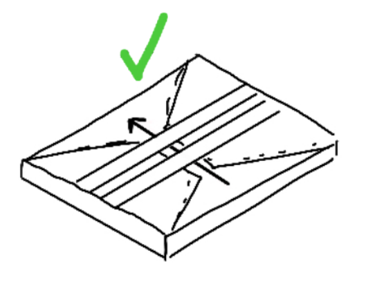
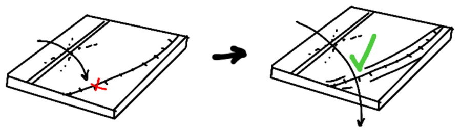
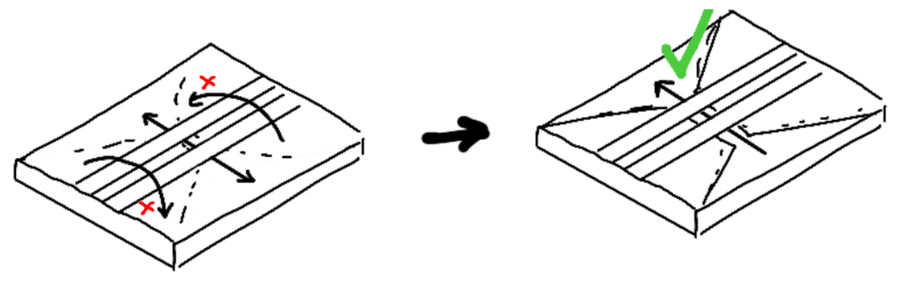

Draft recommendations
1aPreserve existing structures that facilitate movement
Work with DOT to preserve already functional structures

1bPreserve existing structures that facilitate movement
Preserve potentially functional structures with contextual changes

2aFunnel movement to structures
Introduce exclusionary fencing to channel wildlife movement

2bFunnel movement to structures
Where cattle fencing is at entrances to structures, replace with wildlife-friendly design

Note: draft for review.